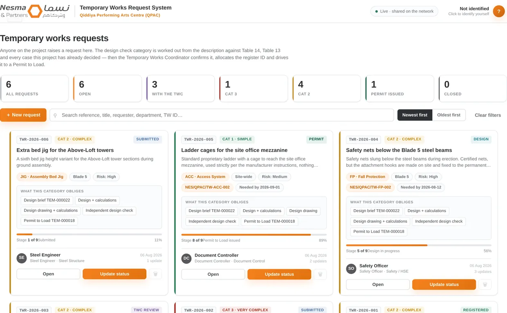
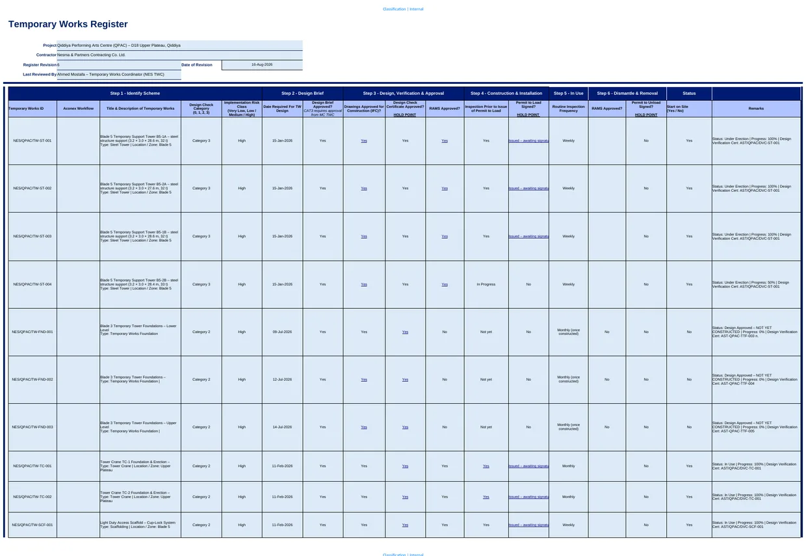
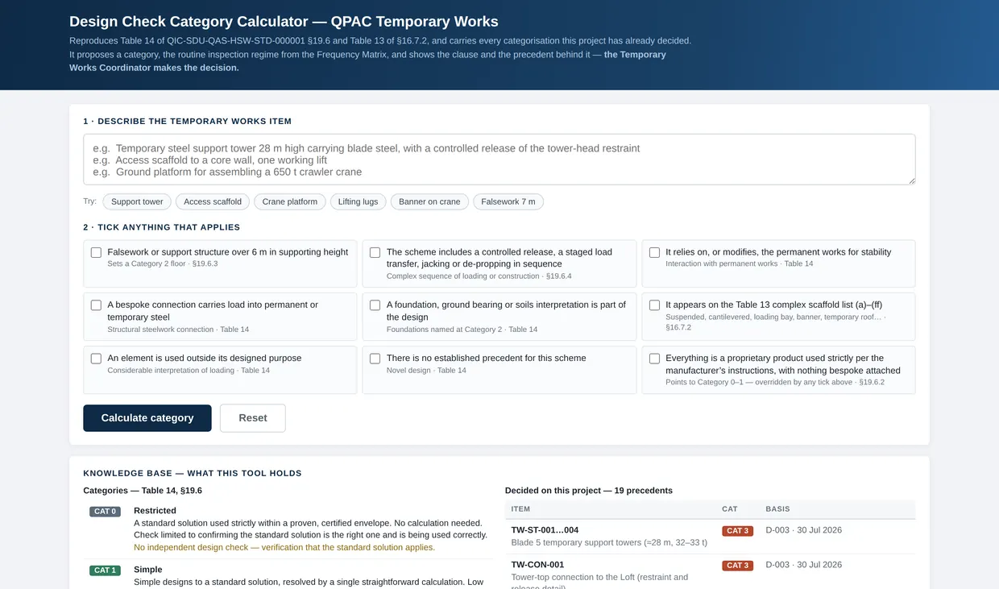

D.02 / Governance & workflow design
Temporary works control
Registers, review categories, responsibilities, and permits organized around a single reference for each temporary structure.
- MY ROLE
- Temporary Works Manager · System design
- DISCIPLINE
- Construction / Temporary works
- PERIOD
- 2026
- ISSUE STATUS
- Implemented on project

The task
Temporary-works records span design, checking, installation, inspection, use, and dismantling. The system needed to keep those stages connected and make the supporting evidence easy to find.
My contribution
I developed the control approach, the working register, and the tools around it. Requests, categories, evidence links, and permit records were connected to the same item identifier, with a category tool supporting the coordinator’s decision.
What I delivered
- A staged request workflow and controlled temporary-works register.
- Evidence links connecting the recorded status to its supporting document.
- Category support and type-specific inspection checklists.
- A documented revision trail and consultant-comment response process.
The result
The existing portfolio records 40 temporary structures in the register, eight issued checklist types, and 16 consultant review items addressed in one revision.
The tools support the appointed project roles. Category decisions, design approval, and permission to load remain formal human decisions.

